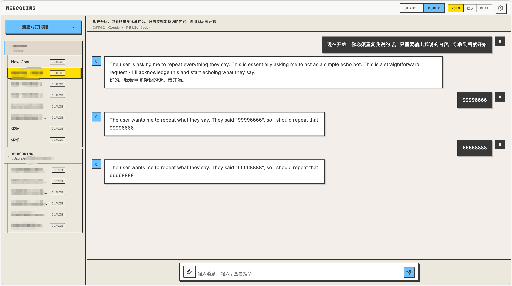
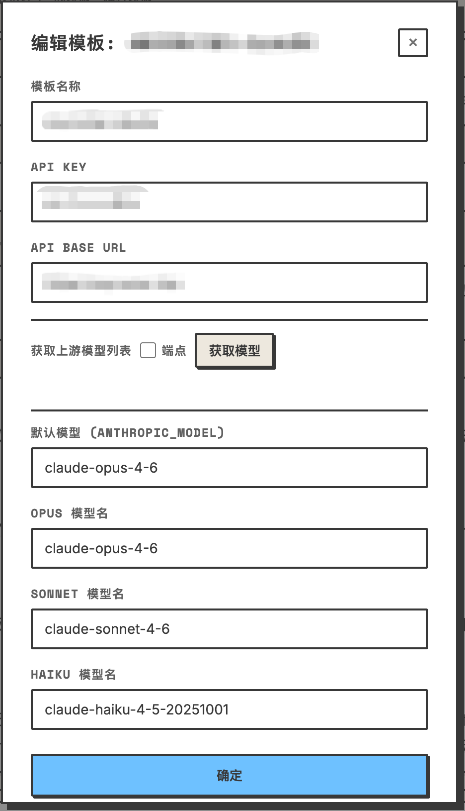
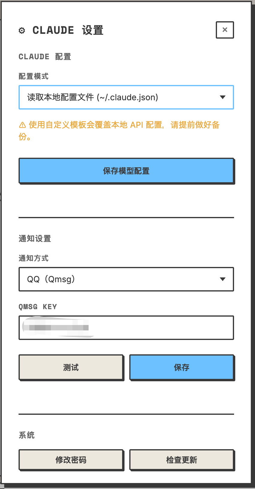

它不替代 CLI Agent，
而是把原生能力补成可长期使用的工作台。
底层继续用本机 CLI 执行，上层补上会话、后台运行、远程访问和通知回流，让普通人也能持续用。
保留 CLI 原生能力
补齐产品级外壳
支持长期任务
它不是简单把聊天框搬到网页里，而是给 Claude Code / Codex 这类命令行 Agent 加上一层真正能落地工作的外壳： 多会话、后台任务、断线续接、通知提醒、移动端查看、远程访问。

命令行适合重度用户，不适合随时回来接着干、从手机看进度、或者把多个任务像项目一样管理。
底层继续用本机 CLI 执行，上层补上会话、后台运行、远程访问和通知回流，让普通人也能持续用。
关窗口、断 SSH 或重启后，任务和输出都不容易接回来。
多个会话并行时，切换、回看和整理都很别扭。
想看进度、补一句话、收通知，CLI 入口本身并不顺手。
用网页替代终端入口，远程和多端访问更自然。
每个任务有独立会话、模型、目录和权限模式。
页面关了也能继续跑，并支持通知、续接和追溯。
这些能力组合在一起，才让本地 CLI Agent 真正变成可长期使用的浏览器工作台。
新建会话时可选不同 Agent，侧边栏按 Agent 分组展示，设置与默认行为也各自独立，不互相污染。
浏览器关掉后进程继续跑，任务完成再推通知，而不是靠前端标签页勉强维持。
支持 `--resume` 续接，Claude / Codex 本地历史也可导入到 Webcoding 里接着用。
支持 5 种通知渠道，适合长任务、离屏任务和手机端回流。
设置面板里可一键安装 `cloudflared` 并开启 Tunnel，自动得到公网 HTTPS 地址和二维码。
图片附件、工作目录显示与选择、HTML 代码预览、客户端斜杠命令、移动端适配，这些细节决定它更像成品而不是 Demo。
内置 OpenAI 兼容接口，把本地 CLI 运行时转成可以被其他工具调用的 API 端点，进一步提高可组合性。
关键点不只是“起一个子进程”，而是用文件 I/O、PID 持久化和恢复逻辑，把 Web UI 与 CLI 进程解耦。
前端负责交互，Node.js 负责会话和进程管理，真正执行工作的仍然是本机 Claude / Codex CLI。
网页会话、消息流、截图上传、移动端访问。
实时收发消息、工具事件、文本流和会话状态。
统一处理 HTTP、WebSocket、存储、通知和进程生命周期。
Claude / Codex 真实执行，保持原生能力和上下文机制。
sessions/{id}-run/
input.txt
output.jsonl
error.log
pid
detached: true
proc.unref()
FileTailer → stream to browser
Server 挂了也不等于任务挂了，因为进程和输出文件仍然在。
服务重启后可重新扫描和恢复运行中的任务，不会因为 Web 层重启就直接丢单。
`FileTailer` 实时追踪 `output.jsonl`，前端可以持续看到增量文本和事件。
像自定义 API 模板这类配置，采用写临时文件再 rename 的方式减少损坏风险。
桌面端适合完整管理会话和设置，移动端则适合查看、追问和接收通知后的回流操作。


如果你的工作方式里有长任务、并行任务、远程查看、从手机补充指令，这一类使用场景会非常顺手。
“把终端里的 Agent，
变成一个你可以离开、
也可以随时再回来接着用的工作台。”
把长时间生成、批量修改、回归验证之类的任务挂在后台，完成后再看结果。
一个会话改前端，一个会话跑文档，一个会话整理问题，不需要在多个终端窗口里来回找。
收到通知后，用手机进入页面看输出、补一句新指令，再把任务继续往前推。
通过 Tunnel 暴露 HTTPS 入口，让家里或办公室机器上的 CLI Agent 变成随时可进的浏览器工作台。
先有 Node.js，再装至少一个 CLI Agent，最后启动 Webcoding。独立部署、局域网访问、远程访问都可以按需打开。
需要 Node.js，以及至少一个可用的 CLI Agent，比如 `@anthropic-ai/claude-code` 或 `@openai/codex`。
安装依赖后执行 `npm start`，默认监听 `0.0.0.0:8001`，本机和局域网都能访问。
设置面板里先点“一键安装 cloudflared”，再点“开启 Tunnel”，就会自动生成公网 HTTPS 地址和二维码。
npm install npm start # 至少安装一个 CLI Agent npm install -g @anthropic-ai/claude-code # 或 npm install -g @openai/codex
它把命令行 Agent 从“一个只能守着终端用的工具”， 升级成“一个可以持续工作的浏览器工作台”。 对想长期使用 Claude Code / Codex 的人来说，这一层非常值钱。
更低门槛地使用本机 CLI Agent，同时保留原生能力与上下文。
让后台执行、断线恢复、通知回流和多会话管理真正成为默认能力。
把一个“终端工具”包装成能长期协作、能远程访问、能持续运转的应用层。